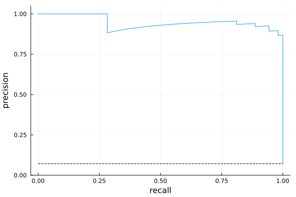
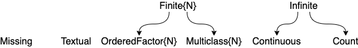
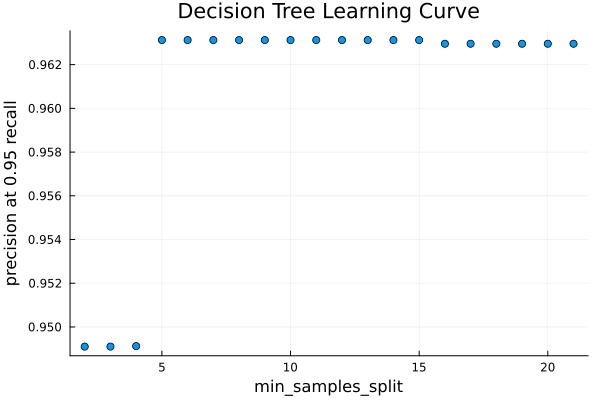
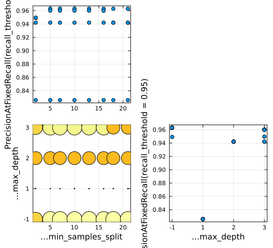
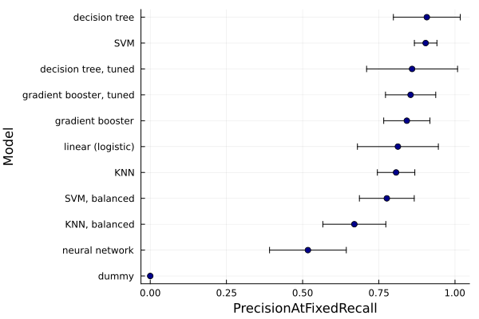
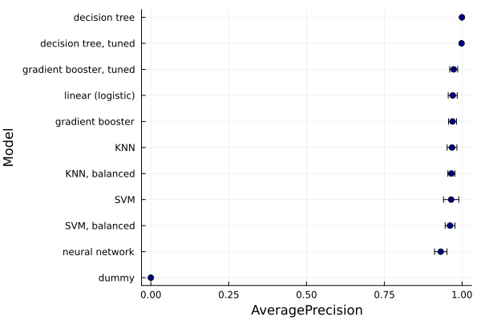
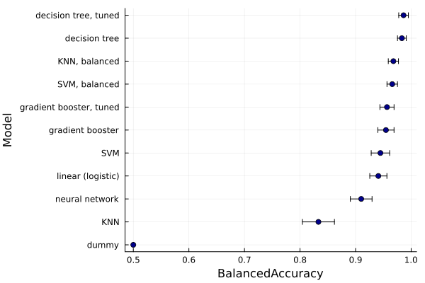

An Introduction to Machine Learning in Quantitative Medicine using Julia
Anthony D. Blaom, May 2026
Abstract
This tutorial presents an end-to-end application of machine learning to the problem of creating an automated test for the presence of some disease. Specifically, we compare several tests for hypothyroidism based on machine learning models, trained using the well studied Garavan Institute dataset (Quinlan, 1986). While our main goal is pedagogical, the models we propose are fully developed, and not mere toy examples.
The source files used to generate the this tutorial and the included code output resides at the GitHub repository github.com/ablaom/ClassImbalanceTutorials.jl.
Overview
Machine learning platform
The principal software tool described here is the MLJ.jl machine learning toolbox, written for the Julia programming language (Blaom et al., 2020). Julia is a newer programming language with the high performance of older languages like FORTRAN and C, but it looks and feels like a scripting language, such as Python, R, and MATLAB. Julia empowers scientific domain experts, without particular programming expertise, to rapidly prototype cutting edge solutions to their computing needs. Julia's potential in computational biology is well established (Roesch et al., 2023). In Pharmacometrics modeling, for example, PumasAI software for non-linear mixed effects modeling, written in Julia, runs considerably faster than commonly adopted alternatives developed over many years (Zeng et al., 2026).
For resources on learning Julia, installing Julia packages, etc, the reader is referred to the Julia website. For a rapid introduction to Julia syntax, we recommend Learn X in Y minutes at learnxinyminutes.com/julia.
We assume readers are familiar with basic statistics, including the use of cross-validation to guard against over-fitting. Readers new to Julia will benefit from previous exposure to a scripting language, such as those cited above.
Class imbalance and measures of test performance
In medical binary classification tasks, such as disease screening and toxicity detection, the training data is typically unbalanced, with many more negative outcomes than positive ones. Additionally, naive measures of task success, such as the proportion of correct predictions, are inappropriate; we should turn to more nuanced metrics.
Crucially, among subjects with hypothyroidism, we seek to reduce the number for which our test fails to return a positive result. Equivalently, we want a high recall. On the other hand, we must account for the tendency that higher recall means more false alarms, or a lower precision, where we have proportionally more positive test results for which a follow up investigation is required, despite the subject not having the disease.
The approach we take here is to fix a target recall, say 0.95, and seek the test that will maximize the corresponding precision. Other metrics commonly used for imbalanced data will be reported alongside this main one, the precision at 0.95 recall.
Performance of the best model
In this tutorial, we estimate the 95% confidence interval (CI) for the expected precision at 0.95 recall of assorted machine learning models, using 70% of the Garavan Institute dataset to do so. Promising models are then evaluated on the remaining 30% holdout test set. For our most promising model, a probability-predicting support vector machine, the CI is 0.904 ± 0.037. This estimated CI is approximate. Generally, it is challenging to obtain reliable uncertainty estimates in machine learning.
As we detail later, using a probability threshold determined from the training data delivers a model which, on the 30% holdout set, has a recall of about 97% (i.e., 2% of subjects with the disease tested negative) and precision of about 88% (13% of patients testing positive did not have the disease). We can also see, from the following empirical precision-recall curve, that we may be able to increase the recall further, without dropping the precision dramatically.

Figure 1. Precision-recall curve for a hypothyroidism test based on a support vector machine
The reader is warned that she can find many analyses of the thyroid data set which quote model performance estimates that are not relevant to the high recall objective outlined above, or which appear without any estimate of uncertainty, or both.
The model building workflow
The Garavan Institute dataset is actually several datasets, with varying amounts of preprocessing. We work directly with the full "allhypo" dataset, which is unprocessed and includes missing values and likely outliers. By features (a.k.a. covariates or inputs) we will mean potential predictors of disease, like gender or blood test results, that are recorded in the training dataset, and available for applying our test to new subjects. The core algorithm that learns how to distinguish between "positive" and "negative" test outcomes, the target variable, is known as a supervised learner. Examples you may have encountered before are logistic regression and decision trees. However, for a complete solution, we must wrap our learner in several other workflows to be detailed in this tutorial:
outlier detection and removal
coercion of feature data types, to ensure "scientifically correct" interpretation by MLJ models
one-hot encoding, which transforms categorical features (such as the source of a referral) to continuous ones (needed in training many models)
feature standardization (normalization)
constructing model pipelines, which combine data pre-processing with a supervised learner, to streamline workflows and mitigate data leakage
training of supervised models that report feature importances, with a view to applying recursive feature elimination, which can address the "curse of dimensionality" and reduce noise
constructing approximate confidence intervals for the expected predictive performance of model pipelines
tuning (optimization) of user-defined hyperparameters to further boost performance
oversampling training data, to correct for class imbalance
comparison of several supervised learning models (model selection)
computing precision-recall curves for additional insight
thresholding: transforming a probabilistic predictor into a predictor of point "positive"/"negative" outcomes, by determining an appropriate threshold for the "positive" class probability.
testing the final model on a holdout test set
1. Julia setup
On launching Julia and activating an appropriate set of third-party packages
We suppose the user is interacting with Julia using the commandline interface known as the REPL. This is typically launched by running the julia command from a terminal (console) window, which delivers a julia> prompt, after which you can enter all the commands in this tutorial. Before doing so, ensure version 1.12 or higher is used by running juliaup default 1.12 or similar from the terminal.
Check the Julia version by entering versioninfo() at the julia> prompt. Quit the REPL by entering exit() or Ctrl-D.
You can also interact with Julia using a interactive development environment such as VSCode or emacs, or using notebook-style interfaces such as Jupyter (python-driven) or Pluto, not discussed here.
Enter both lines of code below in the REPL, after editing the definition of LOCAL to point to the directory to which you would like figures to be saved. Code after Julia's comment character # is ignored.
LOCAL = @__DIR__ # e.g., `LOCAL = "~/my/figures/"`
localfile(name) = joinpath(LOCAL, name);Package management
A package environment is a set of specific third party packages known to be compatible with each other and the version of Julia you are using. Typically, each project you work on will have it's own environment, which you will want to share with coworkers to ensure workflow reproducibility. Although you can start to learn Julia without worrying too much about package management, it is worth investing time understanding this powerful Julia feature before carrying out serious work.
To create a package environment compatible with the code in this tutorial, you can:
Clone the GitHub repository at https://github.com/ablaom/ClassImbalanceTutorials.jl.
In a fresh REPL session, edit the right-hand side of following definition to point to the root directory of your clone:
path_to_clone = "path/to/ClassImbalanceTutorials.jl/".Still in the REPL, enter the lines of code below (with a carriage return after each line):
using Pkg
Pkg.activate(path_to_clone) # activate a set of packages
Pkg.resolve() # determine mutually compatible versions
Pkg.instantiate() # download packages to your computerYou should expect this last step to take some time, as all the software for the tutorial is pre-compiled.
If you encounter issues, you can try manually installing the packages you need in a new environment, created with Pkg.activate("my_env"), based on the output printed below:
import Pkg
Pkg.status()Status `~/work/ClassImbalanceTutorials.jl/ClassImbalanceTutorials.jl/docs/src/notebooks/thyroid/Project.toml`
[1520ce14] AbstractTrees v0.4.5
⌅ [336ed68f] CSV v0.10.17
[a93c6f00] DataFrames v1.8.2
[f6006082] EvoTrees v0.19.0
[c709b415] Imbalance v0.2.1
[add582a8] MLJ v0.23.3
[c6f25543] MLJDecisionTreeInterface v0.5.0
[094fc8d1] MLJFlux v0.6.8
[61c7150f] MLJLIBSVMInterface v0.2.2
[6ee0df7b] MLJLinearModels v0.10.4
[eff96d63] Measurements v2.14.1
[636a865e] NearestNeighborModels v0.2.3
[262411bb] OutlierDetection v0.4.2
[51249a0a] OutlierDetectionNeighbors v0.1.5
[91a5bcdd] Plots v1.41.7
[860ef19b] StableRNGs v1.1.0
[a19d573c] StatisticalMeasures v0.3.7
[2913bbd2] StatsBase v0.34.13
[f43a241f] Downloads v1.7.0
Info Packages marked with ⌅ have new versions available but compatibility constraints restrict them from upgrading. To see why use `status --outdated`
For example, to add MLJ v0.23.2, do Pkg.add("MLJ@0.23.2").¹
If you need to start over in a new Julia session, you will need to begin with using Pkg and the appropriate Pkg.activate(...) command you used before.
Making our workflows reproducible
As many algorithms depend on pseudo-random number generators (RNG's), and as the behavior of the default RNG can depend on the Julia version, we take some special steps in the tutorial so we can generate an identical RNG, stable across Julia versions, whenever needed.
import StableRNGs
const SEED = 234
stable_rng() = StableRNGs.StableRNG(SEED);Here's a demonstration:
rng = stable_rng()
# generate a random number between 0 and 1:
rand(rng) # this call mutates `rng` state0.48542906587478507rand(rng)0.09049710430456415rng = stable_rng() # reset the rng
rand(rng) # same as first result above0.48542906587478507To use the default RNG (which has better performance) you can omit specifying any RNG, as in this example:
rand()0.127880762300793822. Models and machines
Learning about the principal actors in MLJ workflows
Before considering hypothyroidism, we quickly build a predictive MLJ model using a dataset that requires no special preprocessing, the Fisher iris dataset. It is loaded like this:
using MLJ # load the MLJ package
X_iris, y_iris = @load_iris;Here X_iris, the features (specimen dimensions) is a rather basic form of Julia table, namely a named tuple of vectors; y_iris is an ordinary vector representing the target variable, in this case the species of iris.
Although MLJ is not too fussy about table types (it supports most formats meeting a specification set out by the Tables.jl package) we'll convert X_iris to a dataframe, Julia's de facto standard for in-memory tabular data, which has a nicer display and is easier to manipulate:
import DataFrames
X_iris = DataFrames.DataFrame(X_iris)
first(X_iris, 3) # return the first three rows of the dataframe3×4 DataFrame
Row │ sepal_length sepal_width petal_length petal_width
│ Float64 Float64 Float64 Float64
─────┼──────────────────────────────────────────────────────
1 │ 5.1 3.5 1.4 0.2
2 │ 4.9 3.0 1.4 0.2
3 │ 4.7 3.2 1.3 0.2
first(y_iris, 3) # or, you can do `y_iris[1:3]`3-element CategoricalArrays.CategoricalArray{String,1,UInt32}:
"setosa"
"setosa"
"setosa"There are three species of iris in Fisher's dataset:
levels(y_iris)3-element CategoricalArrays.CategoricalArray{String,1,UInt32}:
"setosa"
"versicolor"
"virginica"Here's how to "instantiate" a decision tree model to predict the target based on new iris features, after importing the code needed for that model:
DecisionTreeClassifier = @load DecisionTreeClassifier pkg=DecisionTree # model type
model = DecisionTreeClassifier(min_samples_split=5, rng=stable_rng()) # model instanceDecisionTreeClassifier(
max_depth = -1,
min_samples_leaf = 1,
min_samples_split = 5,
min_purity_increase = 0.0,
n_subfeatures = 0,
post_prune = false,
merge_purity_threshold = 1.0,
display_depth = 5,
feature_importance = :impurity,
rng = StableRNGs.LehmerRNG(state=0x000000000000000000000000000001d5))With the exception of min_samples_split and rng, we have selected default values of the hyper-parameters of the model, namely those parameters we need to specify before any learning begins. Never mind about the meaning of these hyper-parameters for now.
Going deeper.² To see all registered MLJ models that can be immediately applied to our data, do models(matching(X, Y)). See the Model Search section of the MLJ documentation for more options.
So far, we have seen three different ways to load package code. When we run import DataFrames we load the DataFrames.jl package but must qualify the name of any function we use from there, as in DataFrames.DataFrame(X_iris). By contrast, running using MLJ loads the MLJ.jl package but brings many MLJ functions directly into the namespace (an example is models - we don't need to call it as MLJ.models). Finally, the @load macro is an MLJ-specific tool for loading the type and related code for a specific machine learning model in the MLJ Model Registry, which is searchable using the models method.
Incidentally, a macro such as @load, whose name always begins with the @ character, is a special kind of Julia function we won't explain here. For the beginner, it suffices to note it is typically called without parentheses, and spaces instead of commas. ■
The word "model", ubiquitous in statistics and machine learning, has a specific meaning in MLJ documentation and in this tutorial. A model is an object encapsulating a machine learning algorithm, such as least-squares fitting of a polynomial, a decision tree, or logistic regression, together with the hyper-parameters (such as the degree of the polynomial). In statistics a "model" generally includes the learned parameters (such as the coefficients of the polynomial) but in MLJ these are external to the model.
Next, we bind the model together with the available data in what's called a machine:
mach = machine(model, X_iris, y_iris);A machine starts life as model plus data, but it additionally stores learned parameters (the tree) once it is trained on some view of the data. (To guard against over-fitting, we typically do not train on all the data!).
train_rows = 1:2:149 # the odd rows of the dataset
fit!(mach, rows=train_rows)[ Info: Training machine(DecisionTreeClassifier(max_depth = -1, …), …).
The exclamation mark ! reminds us that mach is begin mutated; specifically, the learned parameters are being added. Having trained the model, we can inspect its learned parameters like this:
theta = fitted_params(mach)(tree = DecisionTree.InfoNode{Float64, UInt32}(Decision Tree
Leaves: 5
Depth: 3, nchildren=2), raw_tree = Decision Tree
Leaves: 5
Depth: 3, encoding = Dict{UInt32, CategoricalArrays.CategoricalValue{String, UInt32}}(0x00000002 => CategoricalValue(CategoricalArrays.CategoricalPool{String, UInt32}(["setosa", "versicolor", "virginica"]), 2), 0x00000003 => CategoricalValue(CategoricalArrays.CategoricalPool{String, UInt32}(["setosa", "versicolor", "virginica"]), 3), 0x00000001 => CategoricalValue(CategoricalArrays.CategoricalPool{String, UInt32}(["setosa", "versicolor", "virginica"]), 1)), features = [:sepal_length, :sepal_width, :petal_length, :petal_width])Here's how we can get a detailed representation of the decision tree itself:
keys(theta)(:tree, :raw_tree, :encoding, :features)theta.treepetal_length < 2.45
├─ setosa (25/25)
└─ petal_width < 1.65
├─ petal_length < 5.25
│ ├─ versicolor (24/24)
│ └─ virginica (1/1)
└─ sepal_length < 5.95
├─ virginica (3/4)
└─ virginica (21/21)
So, for example, if petal_length ≥ 2.45, petal_width ≥ 1.65, and sepal_length < 5.95, then this decision tree model predicts virginica as the species, with probability of 3/4 = 75%.
There is also a report function for machines, which returns any byproducts of training that are not fitted parameters, in this case nothing noteworthy:
rprt = report(mach)
keys(rprt)(:classes_seen, :print_tree, :features)rprt.classes_seen3-element CategoricalArrays.CategoricalArray{String,1,UInt32}:
"setosa"
"versicolor"
"virginica"You are allowed to access and mutate the model hyper-parameters:
model.max_depth = 1
fit!(mach, rows=train_rows) # re-train with new hyper-parameters
fitted_params(mach).treepetal_length < 2.45
├─ setosa (25/25)
└─ versicolor (25/50)
Going deeper. A machine stores some other information enabling warm restart for some iterative models, such as a random forest, or the gradient tree boosting model appearing later in this tutorial. In model pipelines, discussed later, fit! only retrains component models that actually need retraining. ■
Here is how we can make predictions on some other view of the bound data:
predict(mach, rows=[2, 52, 102])3-element CategoricalDistributions.UnivariateFiniteVector{Multiclass{3}, String, UInt32, Float64}:
UnivariateFinite{Multiclass{3}}(setosa=>1.0, versicolor=>0.0, virginica=>0.0)
UnivariateFinite{Multiclass{3}}(setosa=>0.0, versicolor=>0.5, virginica=>0.5)
UnivariateFinite{Multiclass{3}}(setosa=>0.0, versicolor=>0.5, virginica=>0.5)We can also supply new data. The form of new data can be most kinds of Julia table, not just a dataframe. For example, this named tuple of vectors will work:
Xnew = (sepal_length = [5.1, 6.3],
sepal_width = [3.0, 2.5],
petal_length = [1.4, 4.9],
petal_width = [0.3, 1.5])
yhat = predict(mach, Xnew)2-element CategoricalDistributions.UnivariateFiniteVector{Multiclass{3}, String, UInt32, Float64}:
UnivariateFinite{Multiclass{3}}(setosa=>1.0, versicolor=>0.0, virginica=>0.0)
UnivariateFinite{Multiclass{3}}(setosa=>0.0, versicolor=>0.5, virginica=>0.5)These are probabilistic predictions which can be manipulated using a widely adopted interface defined in the Distributions.jl package. For example, we can get raw probabilities like this:
pdf.(yhat, "virginica")2-element Vector{Float64}:
0.0
0.53. Downloading a dataset
How to grab a dataset from the Internet and manifest it as an in-memory table
We now return to the thyroid disease dataset.
import Downloads
import CSV # for parsing CSV files
url = "https://archive.ics.uci.edu/ml/machine-learning-databases/"*
"thyroid-disease/allhypo.data"
path = Downloads.download(url)"/tmp/jl_Pd0SJM/allhypo.data"Entering these lines of code downloads the dataset to a temporary location on your computer, like the one shown in the above output. If you have trouble with the host site, try instead
url = "https://raw.githubusercontent.com/manavukani/thyroid-explainableai/"*
"refs/heads/main/dataset/allhypo.data"This particular dataset file is comma-separated, but has no header. The header can be gleaned from https://archive.ics.uci.edu/ml/machine-learning-databases/thyroid-disease/allhypo.names, which has further information about the dataset. We manually provide the header as follows:
header = [
"age", "sex", "on_thyroxine", "query_on_thyroxine", "on_antithyroid_medication",
"sick", "pregnant", "thyroid_surgery", "I131_treatment", "query_hypothyroid",
"query_hyperthyroid", "lithium", "goitre", "tumor", "hypopituitary", "psych",
"TSH_measured", "TSH", "T3_measured", "T3", "TT4_measured", "TT4",
"T4U_measured", "T4U", "FTI_measured", "FTI", "TBG_measured", "TBG",
"referral_source", "diagnosis",
]
data = CSV.read(path, DataFrames.DataFrame; header, missingstring="?");This last line reads the data into a dataframe. Here's one way to view just certain rows and columns:
data[15:21, [:age, :sex, :TSH, :diagnosis]]7×4 DataFrame
Row │ age sex TSH diagnosis
│ Int64? String1? Float64? String31
─────┼───────────────────────────────────────────────────────────
1 │ 28 M 3.3 negative.|2043
2 │ 65 F 12.0 compensated hypothyroid.|3169
3 │ 42 missing 1.2 negative.|2755
4 │ 63 F 1.5 negative.|1010
5 │ 80 F 6.0 negative.|803
6 │ 28 M 2.1 negative.|2297
7 │ 51 F 0.1 negative.|3564
There is a problem with the diagnosis column, which can be inspected like this:
data.diagnosis[15:17] # rows 15 through 193-element Vector{InlineStrings.String31}:
"negative.|2043"
"compensated hypothyroid.|3169"
"negative.|2755"Each entry has a trailing string which corresponds to a patient identifier we won't need. We introduce a function to to trim such an entry, and at the same time collapse all hypothyroidism variants into a single "positive" class:
function fix(class)
trimmed = first(split(class, ".|"))
if trimmed == "negative"
return trimmed
end
return "positive"
end
fix("compensated hypothyroid.|3169") # demo"positive"Applying it to every entry in the diagnosis column:
data.diagnosis = fix.(data.diagnosis);
data.diagnosis[15:17]3-element Vector{AbstractString}:
"negative"
"positive"
"negative"Julia's "broadcasting" syntax fix.(data.diagnosis) applies the function fix element-wise to the vector data.diagnosis; the parentheses are essential here.
We can get a summary of the fields in our dataframe using DataFrames.describe(data), whose output you should inspect. Here's an extract:
DataFrames.describe(data)[[1, 2, 3, 4, 8, 15, 25, 26, 27, 28, 29, 30], :]12×7 DataFrame
Row │ variable mean min median max nmissing eltype
│ Symbol Union… Any Union… Any Int64 Type
─────┼────────────────────────────────────────────────────────────────────────────────────────────
1 │ age 51.8442 1 54.0 455 1 Union{Missing, Int64}
2 │ sex F M 110 Union{Missing, String1}
3 │ on_thyroxine f t 0 String1
4 │ query_on_thyroxine f t 0 String1
5 │ thyroid_surgery f t 0 String1
6 │ hypopituitary f t 0 String1
7 │ FTI_measured f t 0 String1
8 │ FTI 110.788 2.0 107.0 395.0 295 Union{Missing, Float64}
9 │ TBG_measured f f 0 String1
10 │ TBG 2800 Missing
11 │ referral_source STMW other 0 String7
12 │ diagnosis negative positive 0 AbstractString
Inspecting further, we learn that two of the fields are constant for all observations, and a third, hypopituitary, is constant outside of a single observation. As these provide no useful information, we drop them from the dataframe:
DataFrames.select!(data, DataFrames.Not([:TBG_measured, :TBG, :hypopituitary]));The exclamation mark ! in select! indicates that the function is mutating it's argument, data, in-place.
Incidentally, to view the documentation for the DataFrames.describe function, you can enter ?DataFrames.describe in the REPL.
Going deeper. The DataFrames.jl features we have demonstrated so far will suffice for the remainder of this tutorial. For more on manipulating dataframes, see the DataFrames.jl documentation. DataFrames.jl is an essential tool in exploratory data analysis (EDA), not covered here; see, e.g., Storopoli et al. (2021). ■
Here's how you can save the tidied-up data as a CSV file, including header, in your current directory (localfile was defined above):
CSV.write(localfile("allhypo.csv"), data)Load it again with data = CSV.read(localfile("allhypo.csv"), DataFrames.DataFrame).
4. Type coercion
Encoding data so that it is correctly interpreted by MLJ algorithms
A physical variable, such as height, can be represented in different ways on a computer. For example, a person's height in centimeters, although a "continuous" variable, might be represented as a 64-bit integer. On the other hand, an unordered factor ("multiclass") variable, like ethnicity, might also have an integer encoding. This can lead to ambiguity, from the point of view of machine learning algorithms that may treat integer data differently from, say, float data.
For the above reason, MLJ makes a formal distinction between the machine representation of data, and the scientific interpretation of that data, as laid out by certain conventions shared by all MLJ algorithms. By design, MLJ allows users to focus more on scientific types, and view machine types as a secondary "implementation detail".
To find out how your data will be interpreted, we use scitype. To correct for a undesirable interpretation, we use coerce.
typeof(183) # machine typeInt64scitype(183) # scientific typeCountCount corresponds to discrete, ordered data of an unbounded nature, such as the number telephone calls received per hour, or the number of residents in a dwelling.
height = [183, 201, 162, 108]
scitype(height)AbstractVector{Count} (alias for AbstractArray{Count, 1})height = coerce(height, Continuous)4-element Vector{Float64}:
183.0
201.0
162.0
108.0scitype(height)AbstractVector{Continuous} (alias for AbstractArray{Continuous, 1})Here's another example:
blood_type = ["A", "B", "A", "AB", "O", "B"]
scitype(blood_type)AbstractVector{Textual} (alias for AbstractArray{Textual, 1})blood_type = coerce(blood_type, Multiclass)
scitype(blood_type)AbstractVector{Multiclass{4}} (alias for AbstractArray{Multiclass{4}, 1})Note here that the number of factors, 4, appears as a type parameter.
Textual is reserved for data with actual semantic meaning, in the sense of some natural language; this comes up in sentiment analysis (e.g., spam email detection) but less frequently in quantitative medicine. The principal "scalar" scientific types (called scitypes) are summarized in the graphic below.

Figure 2. "Scalar" scientific types
For an explanation of Finite and Infinite see the next "Going deeper" section below. While a table also has a scitype, it is more convenient to inspect the column scitypes with schema:
schema(data)27×3 DataFrame
Row │ names scitypes types
│ Symbol Type Type
─────┼────────────────────────────────────────────────────────────────────────────────
1 │ age Union{Missing, Count} Union{Missing, Int64}
2 │ sex Union{Missing, Textual} Union{Missing, String1}
3 │ on_thyroxine Textual String1
4 │ query_on_thyroxine Textual String1
5 │ on_antithyroid_medication Textual String1
6 │ sick Textual String1
7 │ pregnant Textual String1
8 │ thyroid_surgery Textual String1
9 │ I131_treatment Textual String1
10 │ query_hypothyroid Textual String1
11 │ query_hyperthyroid Textual String1
12 │ lithium Textual String1
13 │ goitre Textual String1
14 │ tumor Textual String1
15 │ psych Textual String1
16 │ TSH_measured Textual String1
17 │ TSH Union{Missing, Continuous} Union{Missing, Float64}
18 │ T3_measured Textual String1
19 │ T3 Union{Missing, Continuous} Union{Missing, Float64}
20 │ TT4_measured Textual String1
21 │ TT4 Union{Missing, Continuous} Union{Missing, Float64}
22 │ T4U_measured Textual String1
23 │ T4U Union{Missing, Continuous} Union{Missing, Float64}
24 │ FTI_measured Textual String1
25 │ FTI Union{Missing, Continuous} Union{Missing, Float64}
26 │ referral_source Textual String7
27 │ diagnosis Textual AbstractString
Based on what we understand about the real world meaning of each column, we can fix some specific column scitypes like this:
data = coerce(
data,
:age=> Continuous,
:sex => Multiclass,
:referral_source => Multiclass,
);┌ Info: Trying to coerce from `Union{Missing, Int64}` to `Continuous`.
└ Coerced to `Union{Missing,Continuous}` instead.
┌ Info: Trying to coerce from `Union{Missing, InlineStrings.String1}` to `Multiclass`.
└ Coerced to `Union{Missing,Multiclass}` instead.
And we can simultaneously ensure all Textual scitypes (mostly "true"/"false" answers in the subject questionnaire) are re-encoded as OrderedFactor:
data = coerce(data, Textual => OrderedFactor);Re-run schema(data) to check the coercions worked.
There is no separate binary scitype in Julia, only Finite{2} and Multiclass{2}. We use the latter for data with a natural choice of "positive" class, as we have for the diagnosis field and true/false questions in the subject questionnaire, and use Multiclass{2} otherwise, as we have for sex.
Going deeper. For more on scientific types see the ScientificTypes.jl documentation. See also the MLJ manual entry, Working with Categorical Data. Scientific types are formal Julia abstract types, and so they have no instances. If you know something about Julia's type system, you will understand Finite and Infinite in the diagram above as abstract supertypes, which get used in MLJ method dispatch. Multiclass and Ordered factor columns are encoded as CategoricalVectors from the CategoricalArrays.jl package, which means they are stored internally as integer arrays for efficiency. ■
Here's how we can see that "negative" diagnoses are over-represented in our data:
import StatsBase
d = StatsBase.countmap(data.diagnosis)Dict{CategoricalArrays.CategoricalValue{String, UInt32}, Int64} with 2 entries:
CategoricalValue(CategoricalArrays.CategoricalPool{String, UInt32}(["negative", "positive"], true), 1) => 2580
CategoricalValue(CategoricalArrays.CategoricalPool{String, UInt32}(["negative", "positive"], true), 2) => 220Julia is being a bit too verbose with data types here. We can fix this like this:
@info "diagnosis class counts" d["negative"] d["positive"]┌ Info: diagnosis class counts
│ d["negative"] = 2580
└ d["positive"] = 220
There are about 15 times more negative outcomes as positive ones.
Before proceeding any further, we set aside 30% of our data for final testing. We instruct MLJ's partition function to shuffle observations and make sure each split has the same representation of "positive" and "negative" classes (the partition is stratified):
data, data_test = partition(
data,
0.7;
stratify=data.diagnosis,
rng=stable_rng(),
);
ntrain = nrows(data)
ntest = nrows(data_test)
@info "size of datasets" ntrain ntest
proportions_train = StatsBase.proportionmap(data_test.diagnosis)
proportions_test = StatsBase.proportionmap(data_test.diagnosis)
@info "diagnosis distribution" proportions_train["positive"] proportions_test["positive"]┌ Info: size of datasets
│ ntrain = 1960
└ ntest = 840
┌ Info: diagnosis distribution
│ proportions_train["positive"] = 0.07857142857142857
└ proportions_test["positive"] = 0.07857142857142857
5. Missing value imputation
Cleaning a dataset by finding reasonable proxies for missing values
To remove missing values, we will use an imputation algorithm called FillImputer. To search for available models related to imputation, you can run models("impute"). Unlike the DecisionTreeClassifier we used earlier, FillImputer is immediately available (no need to @load it). To see all currently loaded models, run localmodels().
Enter ?FillImputer in the REPL to pull up its document string. From there we can see that, by default, FillImputer:
- replaces missing values in a
Continuousfeature with the median. - replaces missing values in a
MulticlassorOrderedFactorfeature with the mode.
Let's start by seeing how we would train such a model on all the training data:
model = FillImputer()
mach = machine(model, data);
fit!(mach)[ Info: Training machine(FillImputer(features = Symbol[], …), …).
Now, as FillImputer is a "transformer" rather than a supervised learner, we use transform instead of predict to get the imputed output:
data_clean = transform(mach, data);Missing values are now gone, which you can check by doing schema(data_clean).
6. Outlier removal and other data preprocessing
Removing outliers and combining this and other common preprocessing steps in a model pipeline
The dangers of automated outlier removal notwithstanding (Barnett and Lewis, 1994), we employ a K-nearest neighbor algorithm for detecting outliers in our training data (Knorr et al., 2000).
To apply this algorithm (and some later supervised learners) we need all our features to be Continuous, and to have a normal range of values, i.e. to be standardized. We use one-hot encoding to transform our OrderedFactor and Multiclass features into Continuous ones, and Standardizer to standardize those features. Both these models are built-in MLJ models.
Instead of applying each data preprocessing step separately, we can combine these steps into a single model pipeline using Julia's pipe syntax |>, which MLJ extends:
preprocess = FillImputer() |> OneHotEncoder(drop_last=true) |> Standardizer()UnsupervisedPipeline(
fill_imputer = FillImputer(
features = Symbol[],
continuous_fill = MLJTransforms._median,
count_fill = MLJTransforms._round_median,
finite_fill = MLJTransforms._mode),
one_hot_encoder = OneHotEncoder(
features = Symbol[],
drop_last = true,
ordered_factor = true,
ignore = false),
standardizer = Standardizer(
features = Symbol[],
ignore = false,
ordered_factor = false,
count = false),
cache = true)A pipeline is an example of a composite model, namely a model that has other models as hyperparameters, which leads to nested hyper-parameters, which can be accessed like this:
preprocess.one_hot_encoder.drop_lasttrueLet's apply this complete pipeline to get our sought-after continuous features:
mach = machine(preprocess, data)
fit!(mach, verbosity=0)
data_continuous = transform(mach, data);
data_continuous[1:3,1:5]3×5 DataFrame
Row │ age sex__F on_thyroxine__f query_on_thyroxine__f on_antithyroid_medication__f
│ Float64 Float64 Float64 Float64 Float64
─────┼────────────────────────────────────────────────────────────────────────────────────────────
1 │ -1.05864 0.662447 0.363629 0.120355 0.111312
2 │ 1.00378 0.662447 0.363629 0.120355 0.111312
3 │ -0.243267 -1.50878 0.363629 0.120355 0.111312
Going deeper. MLJ provides very flexible tools for constructing composite models, beyond the linear pipelines we will consider here. Refer to the Learning Networks section of the manual for more on this advanced topic. ■
We are ready to instantiate our K-nearest neighbor outlier detector. We additionally need the ProbabilisticDetector wrapper for detectors, so that the detector's predictions are probabilistic. This wrapper is provided by the package OutlierDetection.jl (Muhr et al., 2022) which we must explicitly import. Training and prediction proceeds following a familiar pattern:
import OutlierDetection
KNNDetector = @load KNNDetector pkg=OutlierDetectionNeighbors verbosity=0
detector = OutlierDetection.ProbabilisticDetector(KNNDetector())
mach = machine(detector, data_continuous)
fit!(mach)
data.detector_outcome = predict(mach, data_continuous); # add results to the dataframe
first(data.detector_outcome, 3)3-element CategoricalDistributions.UnivariateFiniteVector{OrderedFactor{2}, String, UInt8, Float64}:
UnivariateFinite{OrderedFactor{2}}(normal=>0.936, outlier=>0.0637)
UnivariateFinite{OrderedFactor{2}}(normal=>0.96, outlier=>0.04)
UnivariateFinite{OrderedFactor{2}}(normal=>0.966, outlier=>0.0343)We now choose a rejection rate, which should not be too high or we will remove informative inliers. Having experimented with different rates, we choose a rate we know to optimize the out-of-sample performance of the supervised models to be introduced later, about 5%. From this rate, we determine the threshold probability of normality, and dump the corresponding outlier subjects:
using Statistics # to get the `quantile` method
rejection_rate = 0.05 # chosen based on experimentation
threshold = quantile(pdf.(data.detector_outcome, "normal"), rejection_rate)
data = filter(data) do row
pdf(row.detector_outcome, "normal") > threshold
end;
proportion_accepted = nrows(data)/ntrain0.95Going deeper. Having used it to remove outliers, we make no further use of data_continuous. Later, when we perform cross validation to estimate performance of our supervised models, we will re-apply our data preprocessing to each training and validation fold, but using learned parameters (such as the mean and variance computed in standardization) based only on the training fold. This mitigates data leakage into our validation sets. Having combined our preprocessing algorithms into a single pipeline model makes this rather easy to do. ■
7. Evaluating a supervised model
How to estimate the expected performance of a supervised learner, using: (i) A simple holdout set; and (ii) Sophisticated cross-validation tools
We are almost ready to train our first supervised predictive model. In preparation, we horizontally split our training data into a table of features X, and a vector target y, the diagnosis we want to predict, given new features.
y, X, _ = unpack(data, ==(:diagnosis), !=(:detector_outcome));
first(schema(X).names, 5)5-element Vector{Symbol}:
:age
:sex
:on_thyroxine
:query_on_thyroxine
:on_antithyroid_medicationWe have dropped the detector_outcome field, which is no longer relevant.
Going deeper. To interpret this application of unpack, note that ==(:diagnosis) defines a function such that ==(:diagnosis)(x) is true if x == :diagnosis, and false otherwise. The unpack command takes any column of data which has a name on which this function returns true, and puts it into y. Of the remaining columns, any with name not equal to :detector_outcome goes into X, while the last returned value, discarded here, is everything remaining (in this case the :detector_outcome column). By default, a single column is always returned as a vector instead of a table. ■
The first supervised model we will train is a gradient tree boosting model. For tabular data where the columns have distinct interpretations - so-called structured data, this is often the best performing model. For image data, audio or video, and for some types of natural language processing, neural networks may be a better first choice. A gradient tree booster is relatively quick to train, and, as a byproduct of training, it can rank the importance of our features. We will use this to apply recursive feature elimination, discussed later.
We will use the gradient tree booster EvoTreeClassifier from the EvoTrees.jl package, combining it with the same data preprocessing discussed above. Note that this model cannot be provided an RNG, but only the seed for an internally created RNG.
EvoTreeClassifier = @load EvoTreeClassifier verbosity=0
bare_booster = EvoTreeClassifier(seed=123)
booster = preprocess |> bare_booster;We will now estimate the expected precision at 0.95 recall in two ways: (i) by hand, using a simple holdout set, and (ii) using stratified cross-validation and MLJ's evaluate function.
A holdout performance estimate (by hand)
For an objective estimate of performance, and without touching our reserved test set, we split our training indices further into core_train and validation sets, in the ratio 60:40:
core_train, validation = partition(eachindex(y), 0.6; stratify=y);We train on core_train:
mach = machine(booster, X, y)
fit!(mach, rows=core_train, verbosity=0);And we predict on validation:
yhat = predict(mach, rows=validation)
first(yhat, 3)3-element CategoricalDistributions.UnivariateFiniteVector{OrderedFactor{2}, String, UInt32, Float32}:
UnivariateFinite{OrderedFactor{2}}(negative=>0.00182, positive=>0.998)
UnivariateFinite{OrderedFactor{2}}(negative=>0.00177, positive=>0.998)
UnivariateFinite{OrderedFactor{2}}(negative=>0.00224, positive=>0.998)Our metric is defined like this:
precision_at_95 = PrecisionAtFixedRecall(0.95)PrecisionAtFixedRecall(
recall_threshold = 0.95)And we evaluate like so:
precision_at_95(yhat, y[validation])0.8870235934664247This is an estimate of the expected precision if we choose a probability threshold for the positive class giving us 95% recall. The mechanics of thresholding are discussed later. Unfortunately, this single estimate does not come with any associated estimate of uncertainty. We have no firm basis for rejecting the possibility that, by chance, our empirical estimate is significantly larger than the true population value. Our second approach attempts to address this issue.
Stratified cross-validation (automated)
Recall that in k-fold cross-validation we split a data set into train and validation sets in k different ways, using a partition of the data into k so-called folds. Each fold is a training set, and the fold's complement the corresponding validation set. We thus get k separate estimates of expected performance, whose mean and variance furnish a confidence interval for the expected performance in the general population.
Unfortunately, as the individual fold estimates are not truly independent, this naive approach is flawed, as is well known; see, e.g., Dietterich (1998). Some variants of the method attempt to improve the quality of the CI (we adopt one shortly) but ultimately better estimates rely on complicated specifics of the predictive model, and on assumptions about the underlying data-generating process. This is an active area of research.
Data scientists typically report the naive CI's, with the admonition that such estimates are not 100% reliable.
Here's how we can quickly get a CI for the precision at 0.95 recall, using six-fold cross-validation. Here we are using all rows of our training data (X, y) to construct the folds. To restrict the data used, include a rows=... specification.
evaluate(booster, X, y; resampling=StratifiedCV(nfolds=6), measure=precision_at_95)PerformanceEvaluation object with these fields:
model, tag, measure, operation,
measurement (per-fold aggregate), uncertainty_radius_95 (1.96*SE),
per_fold, per_observation,
fitted_params_per_fold, report_per_fold,
train_test_rows, resampling, repeats
Tag: ProbabilisticPipeline-436
Extract:
┌────────────────────────────┬───────────┬─────────────┬─────────┐
│ measure │ operation │ measurement │ 1.96*SE │
├────────────────────────────┼───────────┼─────────────┼─────────┤
│ PrecisionAtFixedRecall( │ predict │ 0.869 │ 0.099 │
│ recall_threshold = 0.95) │ │ │ │
└────────────────────────────┴───────────┴─────────────┴─────────┘
┌────────────────────────────────────────────┐
│ per_fold │
├────────────────────────────────────────────┤
│ [0.913, 0.646, 0.914, 0.875, 0.914, 0.955] │
└────────────────────────────────────────────┘
Apply `describe` to this result for a named tuple summary.The bottom box shows the individual cross-validation scores, while their aggregate (in this case, mean) is reported under "measurement" in the top box. The number under "1.96*SE" is the 95% uncertainty radius. We use StratifiedCV (there is also a vanilla CV) to ensure each fold has a similar distribution of positives in the target.
To get the earlier holdout estimate, use resampling=[(core_train, validation),] instead. One could also do resampling=Holdout(fraction_train=0.6), but in this case, the split is not stratified.
Empirically, it has been shown that the quality of cross-validation estimates improve if one combines multiple estimates by repeating cross-validation with row-shuffling in between. This is sometimes called Monte Carlo cross-validation. We achieve this with the repeats keyword, but must also specify an RNG (or shuffle=true) to ensure the shuffling happens. At the same time, let us introduce some other metrics for comparison:
precision_at_90 = PrecisionAtFixedRecall(0.9)
metrics = [
precision_at_95,
average_precision,
balanced_accuracy,
accuracy,
]
evaluation = evaluate(
booster,
X,
y;
resampling=StratifiedCV(nfolds=6, rng=stable_rng()),
repeats=3,
measures=metrics,
)PerformanceEvaluation object with these fields:
model, tag, measure, operation,
measurement (per-fold aggregate), uncertainty_radius_95 (1.96*SE),
per_fold, per_observation,
fitted_params_per_fold, report_per_fold,
train_test_rows, resampling, repeats
Tag: ProbabilisticPipeline-590
Extract:
┌───┬────────────────────────────┬──────────────┬─────────────┬─────────┐
│ │ measure │ operation │ measurement │ 1.96*SE │
├───┼────────────────────────────┼──────────────┼─────────────┼─────────┤
│ A │ PrecisionAtFixedRecall( │ predict │ 0.868 │ 0.047 │
│ │ recall_threshold = 0.95) │ │ │ │
│ B │ AveragePrecision() │ predict │ 0.967 │ 0.015 │
│ C │ BalancedAccuracy( │ predict_mode │ 0.96 │ 0.011 │
│ │ adjusted = false) │ │ │ │
│ D │ Accuracy() │ predict_mode │ 0.9873 │ 0.0027 │
└───┴────────────────────────────┴──────────────┴─────────────┴─────────┘
┌───┬───────────────────────────────────────────────────────────────────────────
│ │ per_fold ⋯
├───┼───────────────────────────────────────────────────────────────────────────
│ A │ [0.913, 0.957, 0.956, 0.824, 0.858, 0.875, 0.913, 0.937, 0.917, 0.75, 0. ⋯
│ B │ [0.912, 0.985, 0.996, 0.961, 0.887, 0.988, 0.982, 0.98, 0.993, 0.936, 0. ⋯
│ C │ [0.993, 0.955, 0.974, 0.904, 0.97, 0.953, 0.951, 0.975, 0.977, 0.925, 0. ⋯
│ D │ [0.987, 0.99, 0.99, 0.977, 0.984, 0.99, 0.987, 0.99, 0.997, 0.977, 0.987 ⋯
└───┴───────────────────────────────────────────────────────────────────────────
1 column omitted
Apply `describe` to this result for a named tuple summary.8. Recursive feature elimination
Identifying and removing uninformative features using a supervised model that can rank features, and including the corresponding feature selection in other model pipelines
By working with a reduced feature set, we can avoid the curse of dimensionality, which avails us of more computationally intensive models, such as support vector machines, and simplifies interpretation. Some models also appear to perform better when less informative features are eliminated.
Here's a demonstration of extracting feature importances using the gradient tree booster introduced earlier:
mach = machine(preprocess, X)
fit!(mach, verbosity=0)
X_continuous = transform(mach, X)
mach = machine(bare_booster, X_continuous, y)
fit!(mach, verbosity=0)
predict(mach, rows=1:3) # predictions for the first three subjects3-element CategoricalDistributions.UnivariateFiniteVector{OrderedFactor{2}, String, UInt32, Float32}:
UnivariateFinite{OrderedFactor{2}}(negative=>1.0, positive=>8.07e-5)
UnivariateFinite{OrderedFactor{2}}(negative=>1.0, positive=>5.57e-5)
UnivariateFinite{OrderedFactor{2}}(negative=>0.941, positive=>0.0588)feature_importances(mach)29-element Vector{Pair{Symbol, Float64}}:
:TSH => 0.8465732486025339
:on_thyroxine__f => 0.0807252692038523
:TT4 => 0.02436441018351323
:T3 => 0.01170242150570036
:thyroid_surgery__f => 0.01108429739929545
:age => 0.008957494419934006
:FTI => 0.00888975533456939
:T4U => 0.0029528247804422206
:T3_measured__f => 0.0017558634258870965
:sex__F => 0.0011257671108760275
:query_hypothyroid__f => 0.001000719642876672
:referral_source__SVI => 0.0005633197799465425
:I131_treatment__f => 0.0001724462704739558
:tumor__f => 0.00011125643389966268
:query_hyperthyroid__f => 7.558836638324587e-6
:T4U_measured__f => 7.11352735204822e-6
:FTI_measured__f => 4.4913813736086414e-6
:on_antithyroid_medication__f => 1.7375521191483677e-6
:TT4_measured__f => 4.608716007683241e-9
:query_on_thyroxine__f => 0.0
:sick__f => 0.0
:pregnant__f => 0.0
:lithium__f => 0.0
:goitre__f => 0.0
:psych__f => 0.0
:TSH_measured__f => 0.0
:referral_source__STMW => 0.0
:referral_source__SVHC => 0.0
:referral_source__SVHD => 0.0The precise definition of "importance" is a heuristic one, specific to tree-based models. Other popular model-agnostic approaches to defining and calculating feature importances are Shapley values and LIME explanations, which are not discussed here; see Henninger and Strobl (2025).
We now wrap our bare gradient booster (which expects Continuous features) in recursive feature elimination:
bare_booster_with_rfe(n) = RecursiveFeatureElimination(bare_booster, n_features=n, step=0.25);The model bare_booster_with_rfe(n) is a new predictive supervised learner. When we train this model this triggers multiple training events under the hood. First, the core booster is trained on all the data. Then:
The features are ranked by importance.
Up to 25% of the worst features are dropped from the training data.
We begin again at Step 1, unless the number of features remaining is
n.
Predictions for such a model, are based on the last training event (n features).
For purposes of illustration, let's see if reducing the number of features to four has any noticeable impact on performance. The evaluate command accepts a vector of models, optionally tagged with names, for easy model comparison:
# To avoid re-typing `evaluate` options:
options() = (
resampling=StratifiedCV(nfolds=6, rng=stable_rng()),
measures=metrics,
repeats=3,
verbosity=0,
)
evaluations = evaluate(
[
"booster" => preprocess |> bare_booster,
"booster (2 features)" => preprocess |> bare_booster_with_rfe(2),
"booster (4 features)" => preprocess |> bare_booster_with_rfe(4),
"booster (8 features)" => preprocess |> bare_booster_with_rfe(8),
],
X,
y; # this semicolon is important!
options()...,
);Here a vector of evaluation objects is being returned, but we can get a nice summary table like this:
describe.(evaluations) |> DataFrames.DataFrame4×5 DataFrame
Row │ tag PrecisionAtFixedRecall AveragePrecision BalancedAccuracy Accuracy
│ String Measurement{Float64} Measurement{Float64} Measurement{Float64} Measurement{Float64}
─────┼────────────────────────────────────────────────────────────────────────────────────────────────────────────────
1 │ booster 0.868±0.047 0.967±0.015 0.96±0.011 0.9873±0.0027
2 │ booster (2 features) 0.766±0.058 0.974±0.012 0.965±0.011 0.9909±0.0019
3 │ booster (4 features) 0.82±0.11 0.973±0.015 0.962±0.015 0.99±0.0032
4 │ booster (8 features) 0.81±0.11 0.969±0.014 0.965±0.011 0.9884±0.0022
Okay, no real improvement here. Hower, we can apply the same feature selection ahead of training some other supervised model. The transform method, which is implemented for models wrapped with RecursiveFeatureElimination, performs precisely that feature selection:
mach = machine(bare_booster_with_rfe(4), X_continuous, y)
fit!(mach)
predict(mach, X_continuous) # booster predictions based on reduced features
X_reduced = transform(mach, X_continuous) # the reduced features themselves
schema(X_reduced)┌────────────────────┬────────────┬─────────┐
│ names │ scitypes │ types │
├────────────────────┼────────────┼─────────┤
│ TSH │ Continuous │ Float64 │
│ on_thyroxine__f │ Continuous │ Float64 │
│ TT4 │ Continuous │ Float64 │
│ thyroid_surgery__f │ Continuous │ Float64 │
└────────────────────┴────────────┴─────────┘
This feature comes with one caveat: If, when inserting a RecursiveFeatureElimination model in a pipeline, we want it interpreted as a transformer and not a predictor, we need to first wrap it using MLJ's Transformer wrapper. So we define
reducer(n) = Transformer(bare_booster_with_rfe(n));Let's demonstrate this by applying recursive feature elimination (as learned by the booster) to ordinary logistic regression (called logistic classification in MLJ):
LogisticClassifier = @load LogisticClassifier pkg=MLJLinearModels verbosity=0
bare_linear = LogisticClassifier()
evaluations_linear = evaluate(
[
"linear" => preprocess |> bare_linear,
"linear (2 features)" => preprocess |> reducer(2) |> bare_linear,
"linear (4 features)" => preprocess |> reducer(4) |> bare_linear,
"linear (8 features)" => preprocess |> reducer(8) |> bare_linear,
],
X,
y;
options()...,
)
describe.(evaluations_linear) |> DataFrames.DataFrame4×5 DataFrame
Row │ tag PrecisionAtFixedRecall AveragePrecision BalancedAccuracy Accuracy
│ String Measurement{Float64} Measurement{Float64} Measurement{Float64} Measurement{Float64}
─────┼───────────────────────────────────────────────────────────────────────────────────────────────────────────────
1 │ linear 0.54±0.15 0.936±0.018 0.923±0.021 0.986±0.0028
2 │ linear (2 features) 0.69±0.16 0.971±0.014 0.933±0.018 0.9878±0.0029
3 │ linear (4 features) 0.8±0.13 0.965±0.017 0.934±0.016 0.9878±0.0023
4 │ linear (8 features) 0.79±0.13 0.965±0.014 0.941±0.014 0.9885±0.0022
Here we see a definite benefit.
9. Hyper-parameter tuning
Optimizing hyper-parameters with a visual plot, or with a model wrapper that creates self-tuning models
Let us build a new supervised model we can train on the data (X, y) by combining a simple decision tree classifier (as applied earlier to the iris dataset) with our previously described data preprocessing steps:
bare_tree = DecisionTreeClassifier(rng=stable_rng())DecisionTreeClassifier(
max_depth = -1,
min_samples_leaf = 1,
min_samples_split = 2,
min_purity_increase = 0.0,
n_subfeatures = 0,
post_prune = false,
merge_purity_threshold = 1.0,
display_depth = 5,
feature_importance = :impurity,
rng = StableRNGs.LehmerRNG(state=0x000000000000000000000000000001d5))tree = preprocess |> bare_tree;The bare_tree hyper-parameter min_samples_split is a regularization parameter: a lower value reduces the tendency of the tree to over-fit to the training data (by pruning the tree in some way we won't go into here). The default value, 2, corresponds to no regularization. Let's increase the value and see if that has any impact on performance.
tree_regularized = deepcopy(tree)
# mutate nested hyper-parameter:
tree_regularized.decision_tree_classifier.min_samples_split = 5
# compare performance using previous `evaluate` options:
evaluations = evaluate(
["tree" => tree, "tree (regularized)" => tree_regularized],
X,
y;
options()...,
)
describe.(evaluations) |> DataFrames.DataFrame2×5 DataFrame
Row │ tag PrecisionAtFixedRecall AveragePrecision BalancedAccuracy Accuracy
│ String Measurement{Float64} Measurement{Float64} Measurement{Float64} Measurement{Float64}
─────┼──────────────────────────────────────────────────────────────────────────────────────────────────────────────
1 │ tree 0.85±0.15 0.9992±0.0013 0.988±0.0092 0.995±0.0021
2 │ tree (regularized) 0.972±0.017 0.99954±0.00055 0.9917±0.006 0.9973±0.0011
To automate experimenting with hyper-parameter values, MLJ provides two methods. The first, which works for a single hyper-parameter, is visual.
Learning curves
We now explore the effects of varying min_samples_split with a visual plot. For plotting, we use Plots.jl. Another popular plotting package in Julia is Makie.jl.
r = range(tree, :(decision_tree_classifier.min_samples_split), lower=2, upper=21)
_, _, splits, precisions = learning_curve(
tree,
X,
y,
range=r,
resampling=StratifiedCV(nfolds=3),
measure=precision_at_95,
verbosity=0,
)
using Plots
fig = scatter(splits, precisions, legend=false)
xlabel!(fig, "min_samples_split")
ylabel!(fig, "precision at 0.95 recall")
title!(fig, "Decision Tree Learning Curve")
savefig(fig, localfile("tree_learning_curve.svg"));Note that localfile was defined above.

Figure 3. A learning curve for visualizing impact on performance of the
min_samples_splithyper-parameter.
Tuning as model wrapper
For a more principled approach to tuning, and for dealing with more than one hyper-parameter, MLJ implements tuning as a model wrapper. For illustration, we add a second regularization parameter, max_depth, to the search space:
r2 = range(tree, :(decision_tree_classifier.max_depth), values=[-1, 1, 2, 3])
tuned_tree = TunedModel(
tree;
range = [r, r2], # defined above
tuning=Grid(goal=32, shuffle=false), # test on a parameter grid with about 32 points
resampling=StratifiedCV(nfolds=3),
measure=precision_at_95,
);Here tuned_tree is a new supervised model, which we can think of as a "self-tuning" version of the original tree model. Stated differently, it is a new model in which the hyper-parameters min_samples_split and max_depth have become learned parameters. When we train tuned_model on data (X, y), the following happens behind the scenes:
A sequence of
treemutationstree1,tree2,tree3, ... , oftree, with hyper-parameters varying over the specifiedrange, are constructed.evaluateis called on each model mutant, applying the specifiedresamplingstrategy to(X, y), to get out-of-sample estimates of the expected precision at 0.95 recall.The mutant with the best performance is identified.
The best performer is retrained using all supplied data.
After we train the model, we can inspect various intermediate outcomes of the process using report.
mach = machine(tuned_tree, X, y)
fit!(mach);
rprt = report(mach)
keys(rprt)(:best_model, :best_history_entry, :history, :best_report, :plotting)rprt.best_model.decision_tree_classifier.min_samples_split5There is also a plot summarizing the tuning process:
fig = plot(mach)
savefig(fig, localfile("tuned_tree.svg"));
Figure 4. Plot for visualizing the impact on performance of multiple hyper-parameters.
The larger the circles in the bottom left plot, the larger the precision at 0.95 recall.
Because we need out-of-sample estimates in the optimization process, there is less data available for training in each estimate of performance. For that reason, tuning is no guarantee of better performance, especially when the number of subjects is small.
Here is a comparison of our tree and its self-tuning counterpart:
evaluations = evaluate(
["tree" => tree, "tree with tuning" => tuned_tree],
X,
y;
options()...,
)
describe.(evaluations) |> DataFrames.DataFrame2×5 DataFrame
Row │ tag PrecisionAtFixedRecall AveragePrecision BalancedAccuracy Accuracy
│ String Measurement{Float64} Measurement{Float64} Measurement{Float64} Measurement{Float64}
─────┼────────────────────────────────────────────────────────────────────────────────────────────────────────────
1 │ tree 0.85±0.15 0.9992±0.0013 0.988±0.0092 0.995±0.0021
2 │ tree with tuning 0.933±0.027 0.9988±0.001 0.9917±0.0063 0.9953±0.0024
Going deeper. An important reason for implementing tuning as a model wrapper, is to guard against data leakage. With the complete optimization process internalized in the fitting of the meta-model, the inadvertent use of training data for validating hyper-parameter choices is precluded.
When we evaluate the tuned_tree model above we trigger nested resampling: For each fold in an outer resampling loop we are training tuned_model, which itself requires, for each hyper-parameter set, an inner resampling loop, to get the out-of-sample estimates on which the choice of best parameter will be based. Note also that the actual hyper-parameters selected may be different for each fold in the outer loop.
Because nested resampling can be computationally expensive, it is sometimes avoided, but in doing so one may run into data leakage concerns. ■
The TunedModel wrapper is a feature-rich component of MLJ. For a deeper dive, refer to the documentation.
10. Correcting for class imbalance
Synthesizing new subjects to correct for the imbalance in positive and negative outcomes
The most naive way to correct for our excess of negative diagnoses in the training data, is to randomly duplicate subjects with positive outcomes, and add these to the training dataset. This is an example of oversampling. In the more commonly applied variations of this idea, one synthesizes, using some heuristic, new data examples which are not literal copies of existing examples, but are close to them in some sense. Of course, we always check the performance of models trained with oversampled data using using data that is not oversampled.
For the current dataset, and for several supervised models we experimented with, we observed, at best, modest benefits to oversampling, with respect to our target metric. To show the benefit for other metrics, we nevertheless include some oversampled models in our later comparisons.
Let's see how oversampling works in an example. We will use the SMOTE oversampler (Chawla et al., 2002) from the Imbalance.jl package (Wisam and Blaom, 2024). This oversampler requires the features to be oversampled to be Continuous. We set the desired ratios of each class, relative to the majority class (here "negative"), using the ratios hyper-parameter. If ratios is left unspecified, the distribution for classes in the outputs will be a uniform one, with no oversampling of the majority class.
SMOTE = @load SMOTE pkg=Imbalance verbosity=0
smote = SMOTE(rng=stable_rng(), ratios=Dict("positive"=>0.5, "negative"=>1.0))
mach = machine(smote) # no data provided here, and no `fit!`
X_over, y_over = transform(mach, X_continuous, y);
proportions = StatsBase.proportionmap(y_over)
@info "diagnosis distribution" proportions["positive"] proportions["negative"]
@info "data set sizes" length(y) length(y_over)┌ Info: diagnosis distribution
│ proportions["positive"] = 0.3332047821056691
└ proportions["negative"] = 0.6667952178943309
┌ Info: data set sizes
│ length(y) = 1862
└ length(y_over) = 2593
Going deeper. There are two new aspects to this workflow worth commenting on. An oversampler just transforms the data provided. Nothing is "learned", in the sense there is nothing extracted from the data that can be generalized to new data examples. This is in contrast to a supervised predictive model, like a decision tree. Oversamplers have the type Static in MLJ, and for such models:
- We do not provide the
machineconstructor any training data. - There is no need to
fit!the machine - we can immediately applytransform.
There is a variation SMOTE that handles categorical data, SMOTENC. However, for the thyroid dataset we mostly found it more effective to perform oversampling after one-hot encoding and standardization, rather than before it. ■
In MLJ, an oversampler can be combined with a supervised learner using the BalancedModel wrapper. This delivers a new supervised learning model behaving just like the original one, except that, under the hood, oversampling happens whenever the model is trained. Here is a demonstration:
balanced_bare_booster = BalancedModel(bare_booster, oversampler=smote)
mach = machine(balanced_bare_booster, X_continuous, y)
fit!(mach)
predict(mach, rows=1:3)3-element CategoricalDistributions.UnivariateFiniteVector{OrderedFactor{2}, String, UInt32, Float32}:
UnivariateFinite{OrderedFactor{2}}(negative=>1.0, positive=>4.23e-5)
UnivariateFinite{OrderedFactor{2}}(negative=>1.0, positive=>0.000113)
UnivariateFinite{OrderedFactor{2}}(negative=>1.0, positive=>0.000188)The supervised model comparisons that follow include some models wrapped in oversampling.
11. Model comparisons
Comparing several supervised models wrapped in complete machine learning workflows
All the supervised models we will consider are probabilistic predictors. To the models we have already seen, we add:
a linear model,
LogisticClassifier(a.k.a. logistic regression),a support vector machine (SVM),
ProbabilisticSVC,a K-nearest neighbors model,
KNNClassifier,a neural network,
a dummy model,
ConstantClassifier, which predicts, for every new subject, the distribution of "positives" and "negatives" seen in the training subjects.
For some models we include feature reduction (as defined in Section 8), hyper-parameter tuning (Section 9), and correction for class imbalance (Section 10). All models except the ConstantClassifier include:
missing value imputation,
one-hot encoding of
OrderedFactorandMulticlassfeatures,feature standardization,
which we previously combined into the preprocess pipeline.
The support vector machine is not tuned here, as there does not appear to be any benefit in this case, and training it is rather slow. Similarly, tuning the regularization parameter in the linear (logistic) model was found to have no benefit.
The neural network we will use is a multi-layer perceptron (MLP) with two hidden layers with 24 and 13 nodes respectively. The number of neurons in the input and output layers are determined directly from the data (in this case, 29 and 2 respectively). Here is how we build this neural network model:
NeuralNetworkClassifier = @load NeuralNetworkClassifier pkg=MLJFlux verbosity=0
bare_neural_network = NeuralNetworkClassifier(
builder=MLJFlux.MLP(; hidden=(24, 13)),
rng = stable_rng(),
)
neural_network = preprocess |> bare_neural_network;By default, this neural network trains for 10 epochs, which we determined is sufficient, by plotting a learning curve (see Section 9).
For more on MLJ's neural network models, refer to MLJFlux documentation, which includes some demonstration of iterative model control (e.g., early stopping), which is not addressed here; see also the Controlling Iterative Models section of MLJ documentation.
Below is the complete list of supervised models to be compared. Recall that reducer(4), for feature reduction, depends on the gradient tree booster.
# dummy:
constant = ConstantClassifier() # a built-in model
# linear:
linear = preprocess |> reducer(4) |> bare_linear
# decision tree:
bare_tree = DecisionTreeClassifier(rng=stable_rng())
tree = preprocess |> bare_tree;
# decision tree with tuning of `min_samples_split`:
tuned_tree = TunedModel(
deepcopy(tree);
range=range(tree, :(decision_tree_classifier.min_samples_split), lower=2,upper=21),
tuning=Grid(goal=8, shuffle=false),
resampling=StratifiedCV(nfolds=3),
measure=precision_at_95,
)
# gradient tree booster:
bare_booster = EvoTreeClassifier()
booster = preprocess |> bare_booster
# a tuned gradient tree booster:
tuned_booster = TunedModel(
deepcopy(booster),
range=range(booster, :(evo_tree_classifier.max_depth), lower=1, upper=9),
tuning=Grid(goal=5, shuffle=false),
resampling=StratifiedCV(nfolds=3),
measure=precision_at_95,
)
# support vector machine:
ProbabilisticSVC = @load ProbabilisticSVC pkg=LIBSVM verbosity=0
bare_svm = ProbabilisticSVC()
svm = preprocess |> reducer(4) |> bare_svm
# support vector machine with oversampling:
balanced_svm = preprocess |> reducer(5) |> BalancedModel(
bare_svm,
oversampler=SMOTE(rng=stable_rng()),
)
# K-nearest neighbors model
KNNClassifier = @load KNNClassifier pkg=NearestNeighborModels verbosity=0
bare_knn = KNNClassifier(K=25) # `K` chosen after some experimentation
knn = preprocess |> reducer(4) |> bare_knn
# K-nearest neighbors model with oversampling
balanced_knn = preprocess |> reducer(5) |> BalancedModel(
bare_knn,
oversampler=SMOTE(rng=stable_rng()),
);Results
Below are the model comparisons. The computation takes less than 5 minutes on a laptop. We re-order the results so that models with the highest precision at 0.95 recall appear first.
named_models = [
"dummy" => constant,
"linear (logistic)" => linear,
"decision tree" => tree,
"decision tree, tuned" => tuned_tree,
"gradient booster" =>booster,
"gradient booster, tuned" => tuned_booster,
"SVM" => svm,
"SVM, balanced" => balanced_svm,
"KNN" => knn,
"KNN, balanced" => balanced_knn,
"neural network" => neural_network,
]
@time performance_evaluations = evaluate(named_models, X, y; options()...)
performance_summary = describe.(performance_evaluations) |> DataFrames.DataFrame
sort!(performance_summary, :PrecisionAtFixedRecall, rev=true)129.465591 seconds (259.56 M allocations: 31.857 GiB, 12.51% gc time)
11×5 DataFrame
Row │ tag PrecisionAtFixedRecall AveragePrecision BalancedAccuracy Accuracy
│ String Measurement{Float64} Measurement{Float64} Measurement{Float64} Measurement{Float64}
─────┼───────────────────────────────────────────────────────────────────────────────────────────────────────────────────
1 │ decision tree 0.91±0.11 0.99939±0.0008 0.9833±0.0079 0.9948±0.0016
2 │ SVM 0.904±0.037 0.965±0.024 0.945±0.017 0.9896±0.0028
3 │ decision tree, tuned 0.86±0.15 0.9981±0.0012 0.9863±0.0087 0.9961±0.0019
4 │ gradient booster, tuned 0.854±0.082 0.973±0.013 0.956±0.013 0.9882±0.0028
5 │ gradient booster 0.842±0.076 0.969±0.013 0.955±0.015 0.9884±0.0025
6 │ linear (logistic) 0.81±0.13 0.97±0.014 0.941±0.015 0.9889±0.0022
7 │ KNN 0.807±0.061 0.968±0.016 0.833±0.029 0.9749±0.0043
8 │ SVM, balanced 0.776±0.09 0.961±0.016 0.9659±0.0094 0.9841±0.003
9 │ KNN, balanced 0.67±0.1 0.965±0.011 0.968±0.0092 0.9726±0.003
10 │ neural network 0.52±0.13 0.931±0.02 0.91±0.02 0.981±0.0032
11 │ dummy 0.0±0.0 0.0±0.0 0.5±5.5e-17 0.92857±0.00055
To better visualize the confidence intervals, we plot the results for some of the metrics:

Figure 5. Model comparisons for precision at 0.95 recall

Figure 6. Model comparisons for average precision

Figure 7. Model comparisons for balanced accuracy
Going deeper. Below is the code generating plots for each metric, and saving them to disk:
# The tags here need to match the auto-generated column names of `performance_summary`:
named_measures = [
:PrecisionAtFixedRecall => precision_at_95,
:AveragePrecision => average_precision,
:BalancedAccuracy => balanced_accuracy,
:Accuracy => accuracy,
]
using Measurements # a package for wrapping numbers with uncertainties
function myplot(performance_summary)
plts = map(named_measures) do (name, measure)
sort!(performance_summary, name)
measurements = getproperty(performance_summary, name)
means = Measurements.value.(measurements)
uncertainties = Measurements.uncertainty.(measurements)
plt = scatter(
measurements,
performance_summary.tag,
xerror = uncertainties,
xlabel = name,
ylabel = "Model",
markersize = 4,
color=:darkblue,
legend = false,
size=(600, 400),
)
savefig(plt, localfile("$(name)_estimates.svg"))
plt
end
composite_plt = plot(plts...; plot_title="Model Comparison")
display(composite_plt)
return plts
end
plts = myplot(performance_summary)
display(plts[1]) # to display the first plot■
Commentary
Although the simple, untuned, decision tree achieves the best estimate of the expected precision at 0.95 recall, the estimate for the support vector machine (SVM), which is only slightly less, is much sharper (has smaller 95% confidence interval). This is clearly the preferred model.
On the other hand, the decision tree scores very well against both average precision and balanced accuracy scores, and our estimates in these cases are sharp. Meanwhile, the performance of the SVM is relatively poor. However, average precision, an approximation to the area under the precision-recall curve, is more a global measure of performance across all choices of probability threshold. Since we are focused on high recall, it's not the relevant score here.
In passing, we note that average precision is used more generally when the target is imbalanced, because the traditional area under the receiver-operator characteristic (AUC) is known to be less informative in that case.
Like average precision, the balanced accuracy, a proxy for accuracy correcting for class imbalance, is a broad measure of performance and not focused on the high recall regime.
The above comments notwithstanding, because of its simplicity and interpretability, we also consider the decision tree classifier in our final tests below.
Finally, we observe that while oversampling was unhelpful for improving performance of any model against the precision at 0.95 recall, it improved the balanced accuracy of both the SVM and the K-nearest neighbor (KNN) models, the latter significantly. Against average precision, oversampling reduced the variance of the SVM estimate, but did not significantly effect the expected value.
12. Probability thresholding
Estimating the probability threshold needed for a desired recall, and creating a model predicting either "positive" or "negative" based on that threshold
Recall that all our models predict probabilities of the "positive" and "negative" class, not an actual class. To estimate a probability threshold giving us a recall of 0.95, we train our chosen model on a subset of the training data, and compute the corresponding out-of-sample recalls using the remaining training data, as we vary the probability threshold for the "positive" class. An MLJ method called precision_recall_curve automates this procedure and gives us the corresponding precisions at the same time.
First we must train on a subset of the full training data (X, y), so we split the training indices (as we did once before):
core_train, validation = partition(eachindex(y), 0.6; stratify=y);Training the support vector machine on core_train and predicting on validation:
mach = machine(svm, X, y)
fit!(mach, rows=core_train; verbosity=0)
yhat = predict(mach, rows=validation);We compute our thresholds, recalls and precisions like this:
recalls, precisions, thresholds = precision_recall_curve(yhat, y[validation]);
thresholds[[1,2,3,end-2,end-1,end]]6-element Vector{Float64}:
0.9999999
0.9999998638338637
0.9999997143934349
2.411777169086804e-6
2.0278551412511447e-6
1.9589368164263377e-6There is one less threshold than recall or precision, and the recalls and precisions are constant on bins with boundaries in [0, reverse(thresholds)..., 1]. Query the document string for details.
We note in passing that the empirical precision-recall curve appearing in Overview is generated by the following code:
fig = plot(recalls, precisions; legend=false)
xlabel!(fig, "recall")
ylabel!(fig, "precision")
ylims!(fig, (0, 1.05))
plot!(
[first(recalls), last(recalls)],
[last(precisions), last(precisions)],
linestyle=:dash,
color=:black
)
savefig(fig, localfile("svm_precision_recall_curve.svg"));Here is the sought-after threshold:
i = findfirst(>=(0.95), recalls)
threshold = thresholds[i - 1]0.40579923758201664To transform our probabilistic predictor into point predictor, we use another MLJ wrapper, BinaryThresholdPredictor:
svm_after_thresholding = BinaryThresholdPredictor(svm; threshold);We now repeat some of the preceding operations for the decision tree classifier:
mach = machine(tree, X, y)
fit!(mach, rows=core_train; verbosity=0)
yhat = predict(mach, rows=validation);
recalls, precisions, thresholds = precision_recall_curve(yhat, y[validation])
thresholds2-element Vector{Float64}:
1.0
0.0From this we see that our simple decision tree model never predicts the positive class with probability different from zero or one, on the validation set. So, on the validation set, it makes no difference what we use to set the threshold. However, on new data, it may make a difference. So we will adopt the threshold extracted for the SVM:
tree_after_thresholding = BinaryThresholdPredictor(tree; threshold);13. Final testing
Evaluating the performance of our final hypothyroidism tests on the test subjects
Before evaluating on the test data, we need to split it into target and features, as we did for the training data:
ytest, Xtest = unpack(data_test, ==(:diagnosis));Support vector machine
We train the SVM on the full training data set (X, y) and predict on the test data Xtest, comparing prediction with ytest to get a confusion matrix, precision and recall. In Julia, the name precision is reserved for a different purpose; in MLJ you use ppv (positive predictive value, a synonym).
mach = machine(svm_after_thresholding, X, y)
fit!(mach; verbosity=0)
yhat = predict(mach, Xtest);
test_confusion_matrix_svm = confmat(yhat, ytest)
test_recall_svm = recall(yhat, ytest)
test_precision_svm = ppv(yhat, ytest)
@info "test metrics for SVM" test_confusion_matrix_svm test_recall_svm test_precision_svm┌ Info: test metrics for SVM
│ test_confusion_matrix_svm =
│ ┌─────────────────┐
│ │ Ground Truth │
│ ┌─────────┼────────┬────────┤
│ │Predicted│negative│positive│
│ ├─────────┼────────┼────────┤
│ │negative │ 765 │ 2 │
│ ├─────────┼────────┼────────┤
│ │positive │ 9 │ 64 │
│ └─────────┴────────┴────────┘
│
│ test_recall_svm = 0.9696969696969697
└ test_precision_svm = 0.8767123287671232
Decision tree classifier
Repeating the process for the decision tree:
mach = machine(tree_after_thresholding, X, y)
fit!(mach, verbosity=0)
yhat = predict(mach, Xtest);
test_confusion_matrix_tree = confmat(yhat, ytest)
test_recall_tree = recall(yhat, ytest)
test_precision_tree = ppv(yhat, ytest) # precision
@info(
"test metrics for decision tree",
test_confusion_matrix_tree,
test_recall_tree,
test_precision_tree,
)┌ Info: test metrics for decision tree
│ test_confusion_matrix_tree =
│ ┌─────────────────┐
│ │ Ground Truth │
│ ┌─────────┼────────┬────────┤
│ │Predicted│negative│positive│
│ ├─────────┼────────┼────────┤
│ │negative │ 772 │ 1 │
│ ├─────────┼────────┼────────┤
│ │positive │ 2 │ 65 │
│ └─────────┴────────┴────────┘
│
│ test_recall_tree = 0.9848484848484849
└ test_precision_tree = 0.9701492537313433
Although we get better precision, this could well be an accident, because of the much larger uncertainty associated with the decision tree performance estimate. So, in our view, the support vector machine remains the better choice.
References
Barnett, V. and Lewis, T. (1994). Outliers in Statistical Data, 3rd edition. John Wiley & Sons, Chichester. XVII + 582 pp. Reviewed by R. Pincus, Biometrical Journal 37(2), 256. doi:10.1002/bimj.4710370219
Blaom, A. D., Kiraly, F., Lienart, T., Simillides, Y., Arenas, D. and Vollmer, S. J. (2020). MLJ: A Julia package for composable machine learning. Journal of Open Source Software 5(55), 2704. doi:10.21105/joss.02704
Chawla, N. V., Bowyer, K. W., Hall, L. O. and Kegelmeyer, W. P. (2002). SMOTE: Synthetic Minority Over-sampling Technique. Journal of Artificial Intelligence Research 16, 321–357. doi:10.1613/jair.953
Dietterich, T. G. (1998). Approximate statistical tests for comparing supervised classification learning algorithms. Neural Computation 10(7), 1895–1923. doi:10.1162/089976698300017197
Henninger, M. and Strobl, C. (2025). Interpreting machine learning predictions with LIME and Shapley values: theoretical insights, challenges, and meaningful interpretations. Behaviormetrika 52(1), 45–75. doi:10.1007/s41237-024-00253-2
Knorr, E. M., Ng, R. T. and Tucakov, V. (2000). Distance-based outliers: algorithms and applications. The VLDB Journal 8(3–4), 237–253. doi:10.1007/s007780050006
Muhr, D., Affenzeller, M. and Blaom, A. D. (2022). OutlierDetection.jl: A modular outlier detection ecosystem for the Julia programming language. arXiv:2211.04550. doi:10.48550/arXiv.2211.04550
Quinlan, R. (1986). Thyroid Disease [Dataset]. UCI Machine Learning Repository. doi:10.24432/C5D010
Roesch, E., Greener, J. G., MacLean, A. L., Nassar, H., Rackauckas, C., Holy, T. E. and Stumpf, M. P. H. (2023). Julia for biologists. Nature Methods 20(5), 655–664. doi:10.1038/s41592-023-01832-z
Storopoli, J., Huijzer, R. and Alonso, L. (2021). Julia Data Science. ISBN 9798489859165. https://juliadatascience.github.io/JuliaDataScience
Wisam, E. and Blaom, A. D. (2024). Imbalance: A comprehensive multi-interface Julia toolbox to address class imbalance. Journal of Open Source Software 9(95), 6310. doi:10.21105/joss.06310
Zeng, Y., Arisa, O., Corvalan, N., Bateman, F., Schmidt, K., Peer, C. and Figg, W. D. (2026). A comparison of pharmacometric software programs for atezolizumab population pharmacokinetic simulation. European Journal of Clinical Pharmacology 82(2), 42. doi:10.1007/s00228-025-03974-9
¹In fact, a file named Manifest.toml, generated by the package manager, allows you to recreate an exact replica the environment later on. However, small differences across computing platforms mean this method is only 100% reliable when sharing the environment with someone using the same platform (e.g., a silicon Mac). Refer to documentation for details.
²"Going deeper" sections can be safely skipped on a first reading.
This page was generated using Literate.jl.